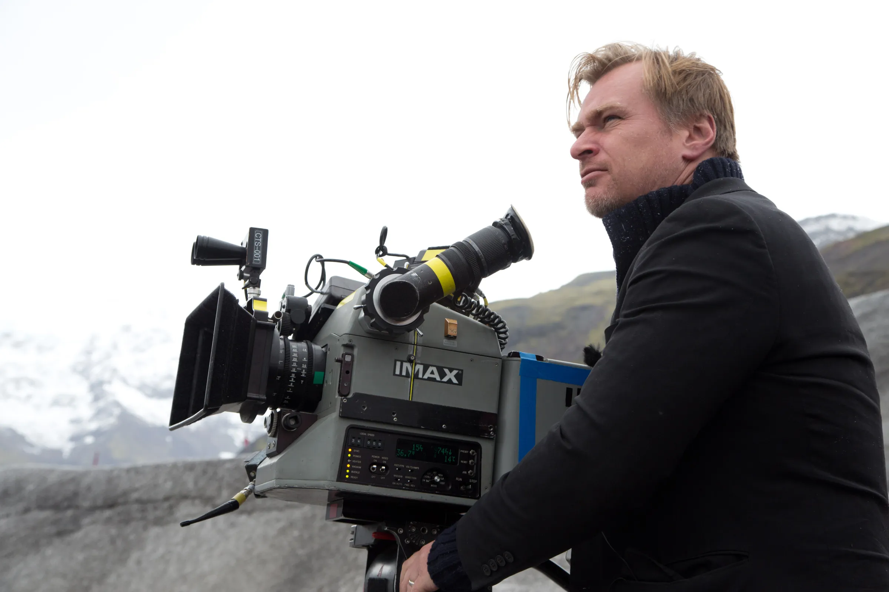
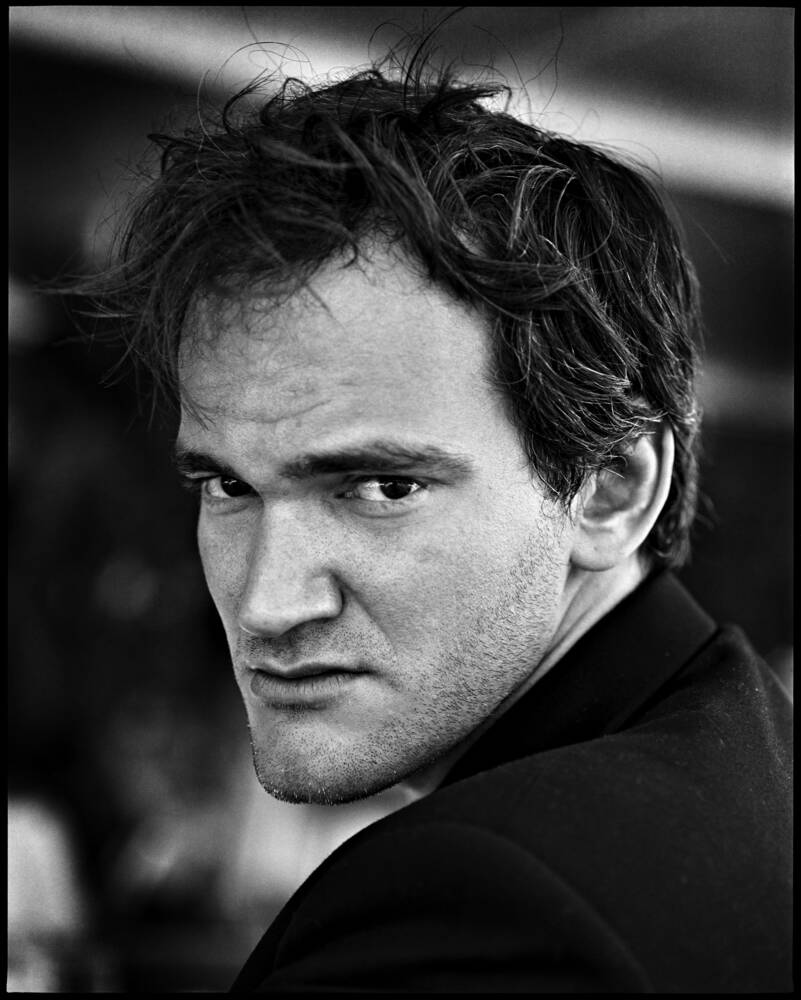
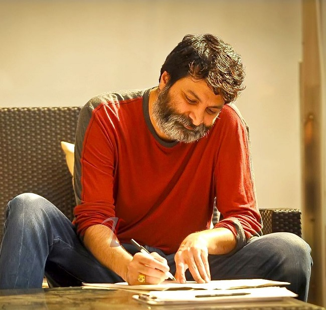
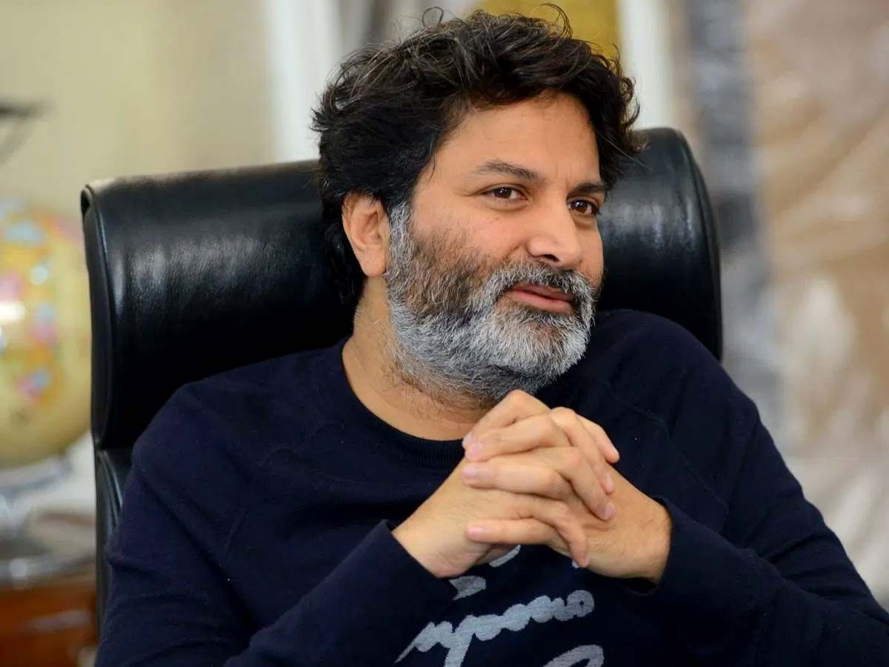

A director is the creative leader of a film. Directors shape the story through their choices in camera work, performances, editing, music, dialogue and visual style.
Some directors develop such distinctive approaches that audiences can recognize their work even before seeing their name in the credits.

Nolan is known for complex narratives, nonlinear storytelling, time manipulation, practical effects, psychological themes and large-scale cinematic experiences.
Andrei Tarkovsky's signature style centers on "sculpting in time"—long, meditative takes, fluid camera movement, and elemental imagery like water, fire, and wind that evoke memory, dreams, and profound spiritual questioning

Tarantino is famous for sharp dialogue, nonlinear storytelling, memorable characters, dark humor, genre references and distinctive music choices, He is a Foot fetish.
Stanley Kubrick’s signature style is defined by rigid one-point perspective symmetry, precise long tracking shots, and an unsettling psychological close-up known as the Kubrick Stare.

Rajamouli is known for epic storytelling, larger-than-life characters, emotional drama, spectacular action sequences and strong visual presentation.
Puri Jagannadh’s signature filmmaking style features raw, rebellious antihero protagonists, fast-paced screenplays, and high-attitude punch dialogues. Sharp, memorable one-liners that deliver rapid mass elevation and intense emotional weight.


Trivikram Srinivas, often hailed as the "Wizard of Words" in Tollywood, has a distinct signature style defined by razor-sharp wit, deep-rooted family emotions, and high-class aesthetic framing.
Ray was known for realistic storytelling, detailed characters, human emotions, natural performances and thoughtful social observation.
Anurag Kashyap’s signature filmmaking style features gritty realism, raw crime narratives, and shooting on real, crowded locations with a spontaneous approach to directing. Characters are rarely pure heroes or villains; they are deeply flawed people making desperate choices.
François Truffaut's signature style blends lyrical realism, handheld camera movements, and innovative editing techniques that helped define the French New Wave.He favored fluid, mobile framing using handheld cameras to create a sense of immediacy, realism, and personal intimacy.
He combines a meditative, slow-paced atmosphere with colossal visual scale, stark geometric framing, and a heavy reliance on striking images over spoken dialogue.
David Lynch's signature style, often described as "Lynchian," features the blending of everyday suburban normalcy with deep, surreal, and terrifying nightmares.
Alfred Hitchcock's signature style defined modern thriller and suspense cinema through innovative camera techniques, psychological depth, and distinctive visual motifs.
Akira Kurosawa's signature style blends dynamic movement, striking geometric compositions, and intense natural elements to explore deep human emotions.
Martin Scorsese's signature style features kinetic, fast-paced editing, dynamic camera movements, and recurring themes of guilt, identity, and moral corruption.
Vanga's signature filmmaking style features raw, emotionally intense, and deeply flawed antiheroes.
Steven Spielberg’s signature directing style blends transparent classical Hollywood techniques with deep-space staging, emotional manipulation, and a profound sense of childlike wonder.
Wes Anderson's signature style is an unmistakable, highly theatrical aesthetic defined by meticulous symmetry, precise pastel or saturated color palettes, and storybook framing
James Cameron’s signature filmmaking style blends titanic visual scale, pioneering technical innovation, and deep explorations of the friction between humanity and technology.
Sir Ridley Scott has a signature visual and narrative style defined by immersive world-building, dramatic atmospheric lighting, and meticulous attention to detail.
Camera angles, lighting, framing and movement help create a director's visual identity.
The way characters are written and developed can become a recognizable part of a director's work.
Colors, costumes, locations and production design contribute to the visual identity.
The way characters are written and developed can become a recognizable part of a director's work.
Music and sound can strongly influence the emotions and atmosphere of a film.
Colors, costumes, locations and production design contribute to the visual identity.
Editing determines the rhythm, pace and way different scenes connect with one another.
Every great film begins with a vision. Directors transform scripts into experiences by bringing together actors, cinematographers, composers, editors and many other creative professionals.
From Christopher Nolan's complex narratives to S. S. Rajamouli's epic spectacles and Anurag Kashyap's visual grandeur, each director demonstrates how a unique creative voice can shape the way audiences experience cinema.